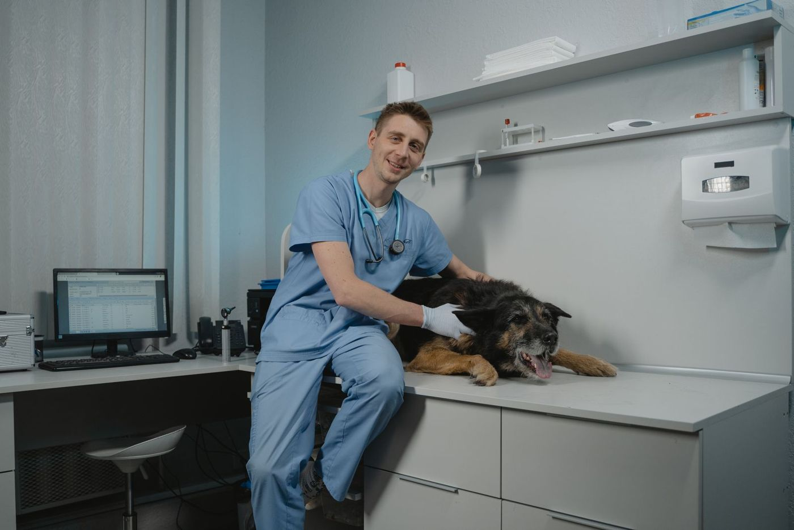
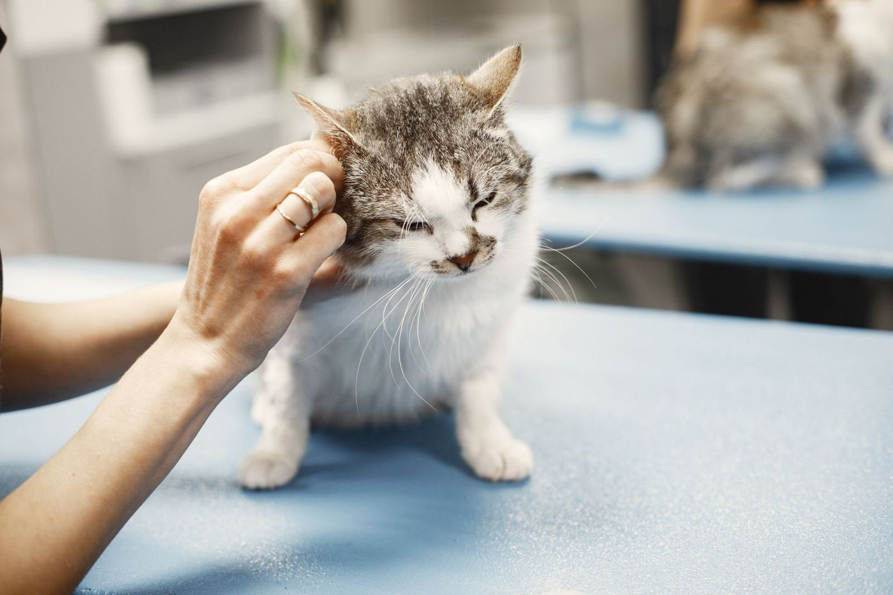
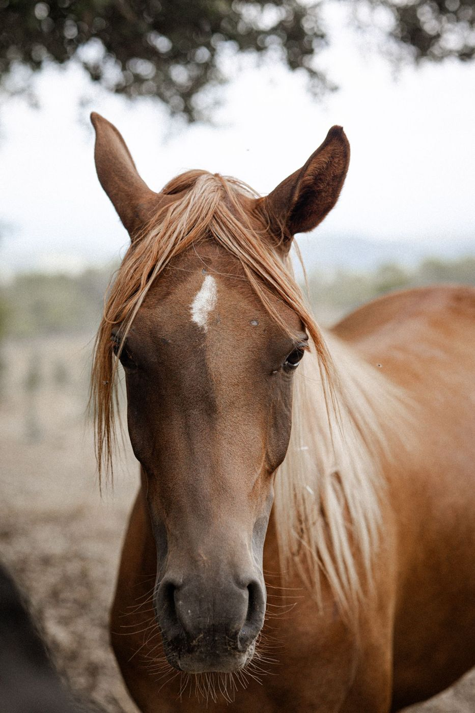
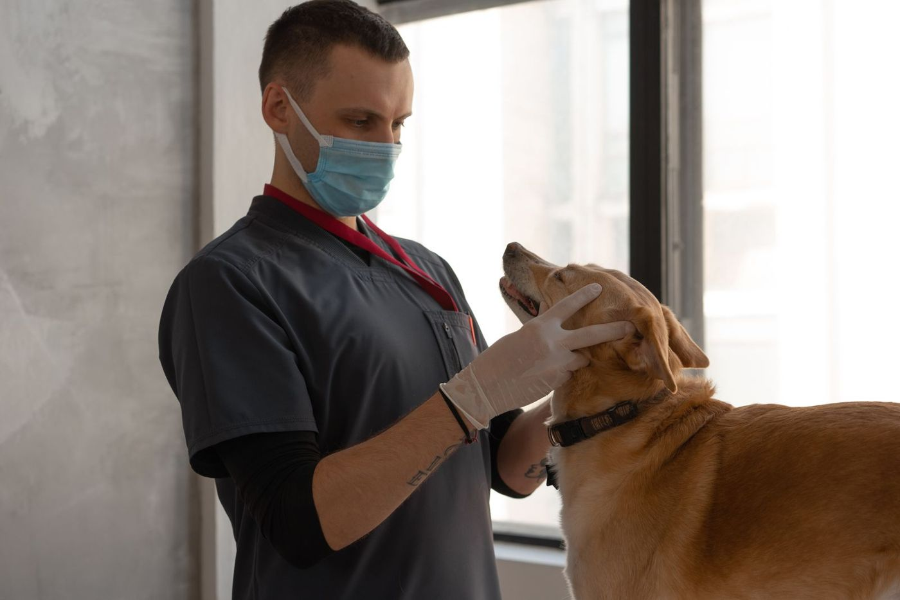
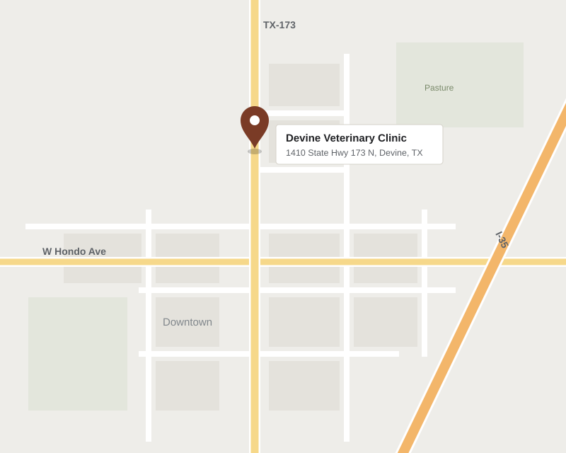

Owner · Veterinarian
Chrissy Scogin, DVM
B.S., Texas A&M University–Kingsville · D.V.M., Texas A&M University, 2009
Comprehensive medicine, surgery and dentistry for dogs and cats, with equine and large-animal services — delivered by experienced, Texas A&M–trained veterinarians.

From wellness examinations and vaccinations to advanced diagnostics and surgical procedures, your animal receives attentive, high-quality care in our hospital.
Annual examinations, vaccinations and parasite prevention tailored to each patient.
Routine and complex procedures, including spay and neuter, with careful anesthetic monitoring.
Professional cleanings, oral examinations and extractions to protect long-term health.
Digital radiology and in-house laboratory testing for timely, accurate answers.
Vaccine series, microchipping, nutrition and early guidance for a healthy start.
Pain management and compassionate end-of-life services for aging companions.
Care for horses and livestock, including Coggins testing.
A fully stocked pharmacy, home delivery and individualized nutritional counseling.
Also offered: Laboratory · Microchipping · Pain Management · Parasite Prevention & Control · Radiology (X-Rays) · Hospice & Euthanasia Services · Nutritional Counseling



Devine Veterinary Clinic is primarily a small-animal practice serving Medina County and the surrounding communities, with equine and large-animal services available. We see patients by appointment, allowing each visit the time and attention it deserves.
We are not currently accepting new clients from San Antonio.
Three doctors of veterinary medicine, all graduates of Texas A&M University, with more than four decades of combined local practice.
B.S., Texas A&M University–Kingsville · D.V.M., Texas A&M University, 2009
B.S. & D.V.M., Texas A&M University, 1981 · In practice since 1982
B.S. & D.V.M., Texas A&M University, 2014
[Client testimonial — insert a verified review from Google]
Access medical records, vaccination history and reminders.
Sign in →Order medications, diets and preventives for home delivery.
Visit pharmacy →Flexible financing options for veterinary care.
Learn more →After hours, contact Thrive Pet Healthcare Specialists, San Antonio.
(210) 822-2873 →| Monday – Friday | 7:30 am – 5:00 pm Closed 12:00 – 1:30 pm |
|---|---|
| Saturday | 7:30 am – 12:00 pm |
| Sunday | Closed |
